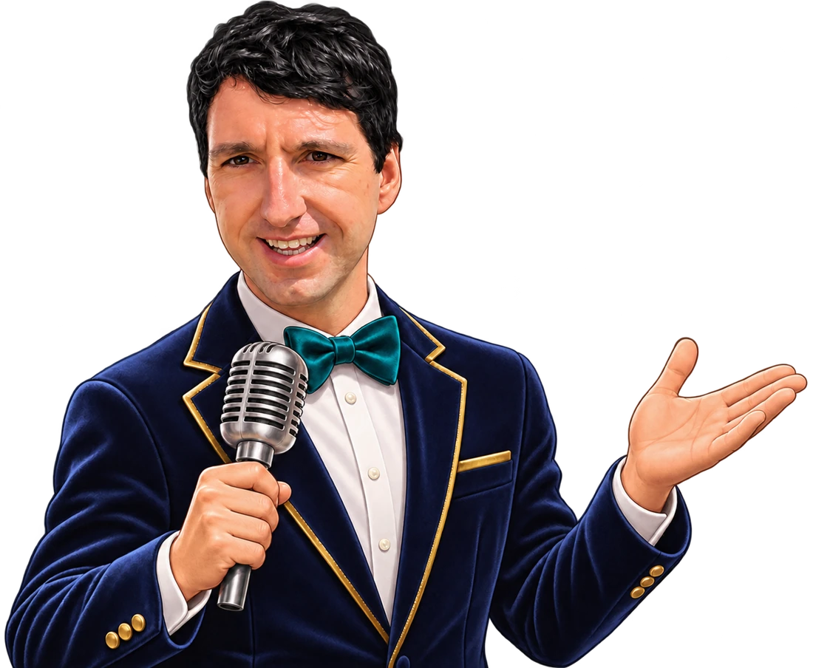

WHEEL OF FORTUNE

Big spins.
Big points!”
Know it.
Spin it.
Win it.
Answer correctly to earn a spin. Build the biggest score you can before the five-minute clock runs out.
Correct answer = one spin. Wrong answer = learn it and move on. The clock keeps running. Highest score in class wins!
How to play & question topics
Start on 0 points. Answer each question once. A correct answer unlocks the wheel. A wrong answer shows the correct answer. Spin wedges add or subtract points, or multiply your current total. Losses can take your score below 0. Doubles and triples multiply your current total, including negative scores.
Any spin earned before the timer ends will count. Everyone plays their own five-minute game; compare final score screens to find the class winner. This game does not share scores between devices.
multiple-choice questions adapted from the existing Year 9 retrieval bank: elements and compounds, periodic table, organism traits, reactions, forces, fluids and pressure, human transport, Earth’s spheres, and Ecosystems through LP4. Later ecosystem content is excluded.
Keys: 1–4 or A–D to answer; Space to spin or continue. The game-show music starts automatically. If your browser requires a gesture, it starts on your first click or keypress. Music and sound effects have separate mute buttons.
Original retrieval website“That’s a wrap!
Show me your score!”
TIME’S UP!
Keep this screen open for Mr Talbot.
The highest final score in class wins!
“Let’s see what you know!”